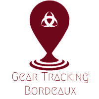

Les parkings publics

Quartiers
Établissements Culturels
Écoles maternelles et Primaires
Établissements pour la petite enfance
Établissement et lieux de services
Établissements sociaux
Lieux de sports et loisirs
Toilettes publiques
Les parkings publics
Les points d’accès à internet
Les mobiliers urbains pour le stationnement des 2 roues
Les Aires de jeux
Parcs, jardins et squares
Carte de Bordeaux
GTB© -Tous droits reservés.-